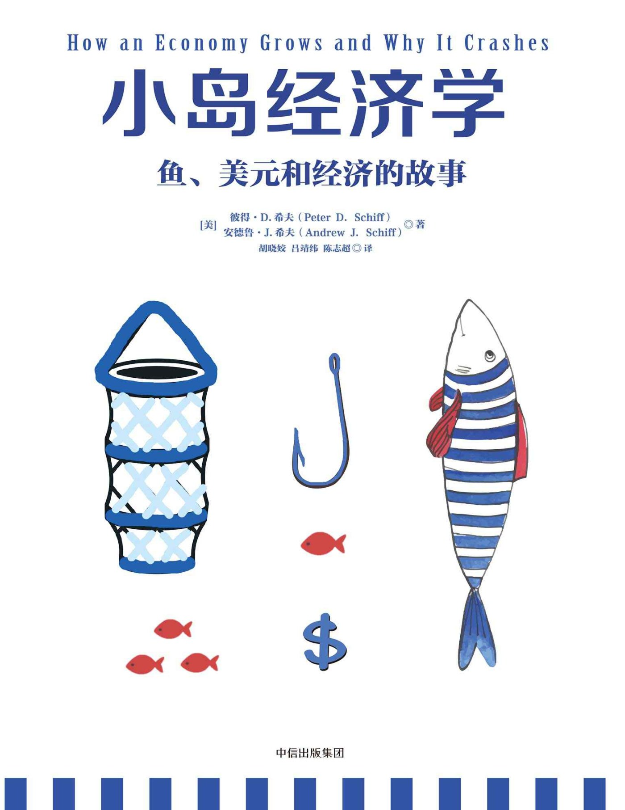

寓言中的人物与年代
本书是一则借美国经济史展开的寓言。为让情节流畅，作者把不同人物、政策和年代压缩到一起：故事里的伯南柯代表更广泛的通胀支持者，以罗斯福为原型的人物承担了早于现实罗斯福时期的鱼券发行角色，多德与机构建立的关系也经过改写。岛屿同样包含现实世界多个地区的特征。
本书PDF第23页从一张渔网开始，看生产、储蓄、货币与债务怎样连成一个经济故事。
依据你提供的2016年9月第3版，整理19章及推荐序、两个序言、阅读说明和后记。作者以奥地利学派立场展开寓言，人物与年代经过压缩；涉及政策、数据和预测时保留书写时期的语境。页码为本书PDF页序。

从渔网、余粮，到货币、泡沫与危机
艾伯承担挨饿与失败的风险，制造渔网，把每天的产出从一条鱼提高到两条。
先读序言与阅读说明，再沿19章跟随小岛发展；后记保留作者对现实与寓言结局的区分。
展开章节，或搜索案例与关键词
没有找到匹配内容，换个词试试。
原文署名：时寒冰
时寒冰看重故事的通俗解释和鲜明观点，并把它连到政府投资、通胀与市场调节的讨论。
时寒冰把这本书介绍为一把理解经济的钥匙：作者从只有几个人的小岛出发，把资本积累、货币形成、金融制度和危机放进连续故事，读者可以跟着人物的选择看见因果。他认为它的价值在于让经济学走出术语，进入普通人能够想象的生活。
本书PDF第7—8页时寒冰并不只把它当作入门书，而是赞赏其反对过度政府干预的鲜明立场。他把书中观点连到当时中国的政府投资、流动性与民营企业处境，认为政府应从主导经济转向提供公共服务，让市场恢复调节能力。这是推荐者自己的现实评论。
本书PDF第7—8页推荐序又强调投资必须比较收益和支出，不能只看建设带来的GDP数字而忽略财富损耗。时寒冰提到自己欣赏彼得·希夫《美元大崩溃》的直率风格，认为本书延续了这种表达。后面两个序言和正文，才是希夫兄弟自己展开的论证。
本书PDF第9页原文署名：彼得·希夫、安德鲁·希夫
两位作者在2013年9月的序言中解释增订理由，质疑依赖宽松货币的复苏。
希夫兄弟回顾出版后四年的读者反馈，认为小岛故事仍能帮助人们理解危机后的经济。珍藏版保留原有主线，补充量化宽松与欧洲问题相关内容，并以新插图改善阅读；它不是另起一套经济学理论。
本书PDF第10页序言署于2013年9月。作者当时看到美国股市、房价与失业率出现改善，却追问家庭收入、就业质量和生产基础有没有相应恢复。他们认为低利率和货币投放可以抬高资产价格，却未必消除造成危机的结构问题。页面里的这些判断保留在当时的语境中。
本书PDF第10—12页作者以从餐桌下抽走桌布作比，反对把退出宽松想成没有代价的技术动作：如果所谓复苏依赖货币支持，撤去支持就可能暴露薄弱之处。他们甚至怀疑政策能否真正退出，这属于他们写作时的预测和批评，也说明新增章节为何继续讨论危机之后的选择。
本书PDF第12—13页原文署名：彼得·希夫、安德鲁·希夫
作者交代奥地利学派立场、对凯恩斯主义的批评，以及父亲传下来的鱼的故事。
作者从2007年多数经济学家未识别危机说起，质疑用更多债务解决债务、用更多消费实现繁荣的方案。他们用航天工程作讽刺对照，表达的核心不满是：预测失败以后，经济政策仍沿着原来的方向加码。
本书PDF第14—15页序言把分歧写得很鲜明。作者将凯恩斯主义概括为用扩大货币供给和财政赤字缓和衰退，将奥地利学派概括为避免低利率制造虚假繁荣，并在衰退中修正繁荣时期的错误配置。他们站在后一种立场，认为无痛复苏的承诺容易受到政治家、大学和金融机构欢迎。读这本书，需要先知道它带着这一明确观点。
本书PDF第15—18页鱼的故事来自父亲欧文·希夫。作者回忆，他出生于支持罗斯福新政的家庭，后来逐渐转向健全货币、有限政府、低税收与个人责任。他反对所得税而付出代价的经历也在序言中出现，但这段家史主要用于说明兄弟两人的思想来源。
本书PDF第18—19页父亲还曾就黄金储备向参议员写信、到委员会作证，反对以解除黄金约束解决美元问题。作者借1960年代黄金外流、1971年美元与黄金脱钩及此后通胀，说明父亲为何警惕没有实物约束的货币与政府债务。这是本书关于货币的论证背景。
本书PDF第19—21页最早的三人捕鱼故事，是父亲在堵车时讲给孩子听的，后来写入著作并改为插图版本。兄弟两人面对2008年危机，决定把它扩写为贯穿美国经济史的寓言。他们希望用幽默说明严肃问题，并明确要反对自己认为危险的凯恩斯式货币与刺激模式。
本书PDF第21—22页原文署名：彼得·希夫、安德鲁·希夫
作者明确说明，人物、年代和岛屿经过混合与改写，以突出经济关系。
本书是一则借美国经济史展开的寓言。为让情节流畅，作者把不同人物、政策和年代压缩到一起：故事里的伯南柯代表更广泛的通胀支持者，以罗斯福为原型的人物承担了早于现实罗斯福时期的鱼券发行角色，多德与机构建立的关系也经过改写。岛屿同样包含现实世界多个地区的特征。
本书PDF第23页因此，读者可以用鱼、鱼券、棚屋和跨岛贸易理解作者主张的机制，但不能把人物的一次出场当作某件真实历史的精确日期。这份解读沿着原书故事展开，保留作者的判断和写作背景，也保留这一阅读说明。
本书PDF第23页原文署名：彼得·希夫、安德鲁·希夫
艾伯承担挨饿与失败的风险，制造渔网，把每天的产出从一条鱼提高到两条。
小岛上只有艾伯、贝克和查理。每人每天徒手捕一条鱼，正好够吃，时间全用在生存上，没有余粮、贷款或投资。大家都希望有更好的衣服、住所和休闲，但仅仅想要更多，并不能让鱼自己出现在篮子里。
本书PDF第25—29页艾伯决定花一天用棕榈树皮编渔网。那天不捕鱼就没有饭吃，他必须暂时少消费，还要承担网可能不好用的风险。两位伙伴嘲笑他，也拒绝承诺在失败后补偿他。作者把这次选择看作资本形成的起点：先牺牲眼前的消费，投入一种可能提高以后产出的设备。
本书PDF第30—32页渔网的价值来自它能帮助捕鱼，并不是拥有一堆绳子本身就叫富有。艾伯开始用网时也不熟练，找到方法后一天能捕两条鱼。他的生产力翻倍，才有可能留下一条鱼，或者隔天休息，把时间用在其他事情上。
本书PDF第32—34页作者特意假设故事里的鱼不会腐烂，这样多余产品才能成为储蓄，继续支撑后面的建设与借贷。这是寓言的简化条件。增长先来自更好的生产方法，消费随后才有增加的基础；延迟消费与承担风险本身并不保证成功，还要做出真正有用的资本。
本书PDF第34—35页现实链接让读者想象所有机器与工具消失后的生活：没有铲子、车、工厂、剪刀或长矛，人只能徒手取得物品。作者借此说明，大脑、工具和创新让有限资源满足更多需要。无论经济规模多大，本章始终把能否更有效生产所需物品作为增长的起点。
本书PDF第35—36页与徒手捕鱼对照：艾伯得到更多鱼，才开始有余粮和空闲。
本书PDF第34页原文署名：彼得·希夫、安德鲁·希夫
艾伯借出余鱼，支持伙伴造网，利息对应风险与等待，小岛的总生产能力随之提高。
看到渔网有效，贝克和查理要求轮流借用。艾伯担心损坏、拖欠，也记得自己挨饿和被嘲笑的经历，于是要求他们自己造网。他们没有余粮，便提出先借鱼，造网后归还；艾伯又追问，怎样保证鱼没有被用来闲躺，或者网没有失败。
本书PDF第39—42页伙伴最后许诺借一条还两条，让艾伯有理由承担风险。这是书中的简化数字，不是作者设定的通用贷款利率。利息在故事里补偿等待和损失的可能性：借款人得到建设期间的食物，贷款人期待日后收到更多鱼，双方都需要判断这项约定是否值得。
本书PDF第42—43页艾伯并非只有放贷一种选择。他可以存鱼、吃掉储蓄、投资造更多渔网出租，或者组合安排。出租的例子里，每人每天交半条鱼租金，用网捕两条，仍比徒手时多留下半条；但租客很快可以积攒余鱼、制造自己的网，租金不一定持续。投资与贷款都不是没有竞争和风险的收入。
本书PDF第44—48页他最终借出鱼，伙伴成功造网，小岛每天总产出从三条提高到六条。作者强调，消费能增加是因为生产先增加；需求早就存在，储蓄支持资本建设才让需求得到更多满足。利己动机也可能通过自愿交易帮助别人，不必先假定一方获利必定使另一方变穷。
本书PDF第48—49页作者还比较无偿送鱼与商业贷款：在故事设定里，拿到礼物的人可能选择休假，贷款的还款责任则推动造网。他并未说休闲本身有错，而是区分改善眼前生活与增加生产能力。现实链接进一步区分提供有价值服务所得的利润，与奴役或强夺劳动成果所得的财富；后者会破坏劳动者的积极性。
本书PDF第49—53页出租例子展示租客也能提高产出，但租金收入受后来自己造网的选择影响。
本书PDF第46页原文署名：彼得·希夫、安德鲁·希夫
贷款不会自动创造财富，要看它是否提高产能、保全能力，以及用什么偿还。
商业贷款的希望，是让储蓄支持借款人建设资本，但计划必须真的有效。原书用鱼群催眠术作反例：如果伙伴把借来的食物耗在失败发明上，产能没有增加，贷款人连本金也可能收不回来。实施顺利的项目可以弥补部分损失，却不能把每笔商业贷款都当成好贷款。
本书PDF第55—57页消费贷款换来的是眼前享受。伙伴若借鱼度假，休息后仍每天只能捕一条，就得减少以后的食量才能还本付息。艾伯因此主张先造网，再获得更稳定的闲暇；没有新增生产能力的消费借款，可能同时增加借款人的负担和贷款人的损失风险。
本书PDF第58—60页应急贷款解决另一种问题。两人患病、一周不能捕鱼时，借出的鱼能够维持生命、保全小岛未来的生产者。它也可能收不回来，但不帮助的后果更严重。作者用这场疾病说明，储蓄若早被没有收益的消费耗尽，遇到真正紧急情况就缺少缓冲。
本书PDF第61—62页在这个实物经济里，艾伯不能合法借出多于自己拥有的鱼，贷款总量受真实储蓄限制。增加借款人的意愿不会增加食物；社会要能支持一段不生产的建设或救急期间，必须先有尚未消费的资源。
本书PDF第63—64页现实链接讨论政府担保、税收优惠和处罚如何改变贷款去向。作者认为，如果政治目标压过还款能力和经营记录，资源就可能流向低效项目，损失最后落到储蓄者身上。后面的货币故事会继续追问：当纸面信贷不断扩大时，有限的真实储备是否只是被暂时遮住。
本书PDF第58—64页病人需要食物，储蓄若提前耗掉，就失去救急能力。
本书PDF第62页原文署名：彼得·希夫、安德鲁·希夫
三人汇集储蓄建成巨型捕鱼器，获得更多活动空间；备用储蓄又让灾后重建成为可能。
都有渔网以后，三人多数时候仍每天只吃一条鱼，把另一条存下。衣服、椰子料理和第一座棚屋出现了，因为生存之外终于有时间。贝克进一步构想能昼夜自动捕鱼的巨型装置，但它需要材料、架子和共同劳动，一个人的储蓄与能力不足以完成。
本书PDF第66—69页三人组成合伙公司，拿出全部积蓄支持一周建设。这次风险从一条鱼扩大到二十多条，没有人保证装置有效，也没有人保证海浪不会把它冲散。工程成功后，装置平均每周捕二十条鱼，只需少量维护；储蓄再次增加，他们又造了第二个。
本书PDF第69—70页更多食物让查理发明冲浪板，艾伯发展服装和戏剧，贝克设计独木舟与手推车。作者借此连接农业剩余与社会分工：只有部分人的生产足以供养更多人，其他人才有条件从事不同活动。资本建设消耗过去的剩余，成功之后创造未来更大的剩余。
本书PDF第70—73页储蓄还承担另一项任务。若季风摧毁捕鱼器，社会实际失去的是生产设备；重建需要再次付出劳动和资源，灾难本身没有创造财富。有备用食物就能边生活边修复，缺少储备就不得不重新挨饿积攒。灾后施工忙碌与财富增加不是同一回事。
本书PDF第73—74页现实链接批评以消费支出判断繁荣。作者用花一百万美元买空气的夸张例子说明，钱发生转手不等于获得新产品；只有生产出的东西值得使用，消费才有意义。他认为奖励消费、削弱储蓄会侵蚀建设与应急能力，并把2008年后鼓励少存多花的政策视为方向错误。
本书PDF第74—75页昼夜自动工作需要更复杂的设备，也需要更大规模的共同投入。
本书PDF第68页图页连接多样活动与面对灾害时的重建需要。
本书PDF第73页原文署名：彼得·希夫、安德鲁·希夫
移民和分工催生货币；独木舟与运鱼车的故事连接效率、价格、工资和利润。
小岛的好生活吸引移民。新来的人操作捕鱼器、种植作物、建棚屋、做马车，更多剩余也支持厨师、冲浪教练等服务。交易不再只是三人互相换鱼：制矛者需要厨师，厨师却未必需要矛，物物交换受到需求不吻合和价值难比较的限制。
本书PDF第77—82页所有人都吃鱼，小岛便把鱼指定为通用货币，工资和商品价格都以鱼表示。这里的货币既是交换媒介，也有食物用途，其价值与人们生存需要相连。货币让不同职业能够交易，并不是因为先造出钱，岛上才出现食物和产品。
本书PDF第82—83页普通人花五天造一条独木舟，放弃十条鱼收入；擅长木工的达菲只需四天，机会成本八条，卖九条就有利润，顾客也比自造省一条。达菲再用储蓄制造工具，把工期缩到两天，成本降到四条，售价降为六条时，每条利润仍从一条增到两条。销量和可负担的顾客群还能扩大。
本书PDF第83—87页作者用这个例子解释自己支持的价格下降：生产效率提高，商品更充足，同样的鱼能买更多东西。持续降价也让储蓄具有吸引力，再支持投资。现实链接中的福特汽车、计算机与等离子电视，都用于说明价格下降可以伴随创新、销量增加和利润，而不必等于行业衰败。
本书PDF第87—88页劳动也与工具相连。强壮的芬尼根每天徒手搬一百条鱼，收2%运费，挣两条；莫里用车搬三百条，收1%，挣三条。莫里若雇芬尼根用车搬四百条，就有四条收入，可以付三条工资、留下自己一条。工人比独自搬运挣得多，顾客运费下降，企业主的资本也获得回报。
本书PDF第89—91页芬尼根以后还可以储蓄造自己的车，或为其他雇主工作。作者据此把就业理解成出售劳动的自愿交易，认为工资取决于技能需求、技能供给和生产力，利润则对应承担风险、组织资源与满足顾客。竞争会影响各方能够提出的条件。
本书PDF第91—92页本章同时表达了作者对最低工资和强制福利的反对：他用劳动价值每小时六美元、最低工资八美元的例子，认为门槛会排除低技能者，并减少工资与福利之间的选择。这是他从自由市场立场作出的论证，与故事里的工资计算属于同一观点体系，不能省去后只留下工具提高工资的温和结论。
本书PDF第88—89页现实链接最后回到通货紧缩。作者区分因生产力提高而降价与对降价的普遍恐惧，认为需求不会凭空消失，买不起或不喜欢时延迟购买可以是理性选择。原书主张让价格回到可负担水平，而不是通过抬价迫使消费；后面的政府和货币章节将继续解释他为何反对通胀。
本书PDF第92—94页生产时间缩短，让降价、利润增加和产量扩大有机会同时发生。
本书PDF第85页运鱼车帮助工人提高搬运量，正文同时给出工资与企业主收入。
本书PDF第90页原文署名：彼得·希夫、安德鲁·希夫
银行集中保管余鱼、筛选借款人；储蓄、风险与期限共同影响利率，冒险投资另有承担者。
余鱼越来越多，放在家中容易失窃，普通人也不擅长审查商业计划。迈克斯·郝寅航建造储藏室、雇看守，并用储户的鱼放贷。他把贷款收益分给储户和工作人员，剩余作为利润，保管和融资便成为一种专业服务。
本书PDF第96—98页银行不能只热心借出鱼。它要挑选能偿还的借款人、收取利息，必要时处理抵押品，还要定期付储户利息、维持信任。经营失败会损害自己的投资和工作；作者把这些利益与责任的联系，作为谨慎放贷的动力。
本书PDF第98—99页可靠借款人的利率较低，高风险借款人需付更高利率。长期存款降低银行突然缺鱼的可能性，因此可得到较高回报。储蓄很多时，银行能够承受更多风险，降低贷款和存款利率；储蓄变少时，提高贷款利率以抑制借款，再提高存款利率吸引积累。
本书PDF第99—102页这套机制既反映资源多少，也反映人们想现在消费还是以后消费。利率上升可以让项目暂缓、让储蓄恢复，随后再支持更多建设。作者认为，不是每一次放慢都必须被人为消除；降低风险与积累真实资源，也属于经济调节。
本书PDF第102—103页银行拒绝度假消费和风险太大的项目，不代表所有新想法都没有机会。曼尼·季金向愿意冒险的人募集鱼，投资银行不接受的项目：饮品公司成功，水下旅游公司失败。保守储蓄与高风险投资分别由接受相应条件的人承担，不能把冒险者的损失自动交给普通储户。
本书PDF第103—106页现实链接转向美联储基准利率。作者承认它影响而非逐笔直接规定所有贷款价格，但质疑少数决策者能否比市场更了解合适的水平，也质疑政治压力造成的低利率偏好。相对于真实储蓄过低的利率，在他的论证中会让借款人误以为资源充足，刺激没有相应延迟消费支持的投资，最终出现虚假繁荣与危机。
本书PDF第106—108页储蓄丰裕支持较低利率；图中利率用于故事示意。
本书PDF第100页资源短缺时提高利率，抑制借款、吸引储蓄，与前图成对阅读。
本书PDF第102页银行不接受的项目仍可向愿承担风险的投资者融资，成败由其承担。
本书PDF第105页原文署名：彼得·希夫、安德鲁·希夫
供水系统展示先投入后获益的关系；跨岛交换说明优势不同也能提高双方生活水平。
岛民原来从山间取水，远处土地难以生活和耕作，旱灾又造成生命威胁。艾伯五世设计收集雨水并输送的系统，预算十八万二千五百条鱼，供二百五十名工人吃两年。工人在建设期间不能同时捕鱼，因此融资必须对应真实的食物和材料。
本书PDF第110—112页投资人曼尼没有足够的鱼，银行后人马可欣·郝寅航看好未来收益，却同样面对储蓄不足。原书在强调这个限制后，直接转到工程竣工的结果，没有展开缺口筹集的过程。竣工后的供水收入偿还本息，并支持一百多名维护人员；项目的价值最终来自它确实送来了水。
本书PDF第112—114页自来水让不毛之地可以耕作，水流能够驱动机器，岛民省下提水时间，转而生产、服务和投资。作者认为，规模变大并未改变最初造渔网的关系：先积累资源支持建设，再靠成功的设备提高产能；工程也必须持续维护。
本书PDF第114—115页小岛随后出口鱼、运鱼车、冲浪板和独木舟，换回所缺产品。邻近的小鼓岛善于制鼓、缺少防晒，狂舞岛喜爱鼓、有多余椰子防晒油，两边交换就比各自保留多余而低价值的产品更有利。国际贸易在故事里是劳动分工跨越了海洋。
本书PDF第115—120页现实链接强调基础设施只有未来收益超过投入，才是有效投资。十八万二千五百条鱼用于供水，就不能同时用于其他项目；若工程无用，施工就业再多也消耗了储蓄和两年劳动。作者以纽约早期私营地铁说明自己的立场，认为应重视经营与收益约束，而不是只看是否由政府发起。
本书PDF第120—121页贸易部分也承认旧行业工人需要重新找工作。作者主张，便宜进口T恤省下的钱可以购买滑板，支持其他行业；保护低效岗位则可能使消费者和新行业失去机会。在他的标准里，经济目标是提高生产力和生活水平，不能只数被看见的保留岗位，还要看被挤掉的其他用途。
本书PDF第121—122页十八万二千五百条鱼供二百五十名工人生活两年，是建设期间的资源约束。
本书PDF第112页两座岛的优势和需要不同，交换让彼此获得本岛缺乏的用品。
本书PDF第119页原文署名：彼得·希夫、安德鲁·希夫
岛民建立海军、法院、警察与灯塔，以税收支持，并用宪法约束权力和支出。
只有三位朋友时，纠纷可以协商；人口和财富增加后，误解、偷鱼贼与外岛袭击使共同防御成为需要。岛民曾试过不合适的领导者，随后决定选十二位参议员，包括能够执行行政事务的议长，建立对人民负责的政府。
本书PDF第124—126页政府组织海军保护岛屿，建立法院解决纠纷、警察执行裁决，并维护灯塔保障海上交通。这些岗位和设施需要鱼，岛民同意纳税支持，将税款存入银行专门账户。税收占用原本能够消费或投资的资源，但岛民认为安全、合同执行和航运改善值得付出。
本书PDF第126—130页他们又制定宪法，列明政府可以行使的权力，未授予的权力留给民众，并设最高法官监督。政府没有花光税款，留下应对季风或入侵的储备。故事此时将投票权给予纳税人，用以强调决定开支与承担开支的联系；这属于作者的寓言制度设定。
本书PDF第128—130页现实链接把宪法比作限制政府的笼子，强调分权、财产权和个人自由，也承认历史中并非每个人都实际享有这些权利。作者担心危机会使人们不断交出权力，要求政府消除所有痛苦；他认为自由包含失败的可能，下一章便展示这一边界如何被改变。
本书PDF第130—131页共同安全与航运服务，是岛民同意以税收支持政府的用途。
本书PDF第127页原文署名：彼得·希夫、安德鲁·希夫
救济承诺扩大支出，鱼券超发，政府用缩小官鱼和接管银行隐藏真实储备减少。
几代人的低税与自由经营之后，小岛繁荣起来。后来投票权不再只属于纳税人，参议员职位也更有吸引力。弗兰基·迪普抓住季风后的重建需要，承诺用政府资金帮助受灾者，击败只承诺保护储蓄与自由的对手；但胜选不会改变储蓄不足的事实。
本书PDF第133—136页他发行鱼邦储备券，承诺凭券兑换政府存鱼，或直接买商品。纸券轻便、没有鱼腥味，逐渐被接受。首席大法官反对越权发行与转移财产，弗兰基便更换法官；拨款也开始围绕能够赢得选民支持的项目安排。
本书PDF第136—137页银行家郝寅航七世发现，每十张鱼券只剩九条鱼可兑，担心挤兑，要求停止印券并恢复储备。政府不愿加税或减支，转而让技师用鱼皮、鱼骨与胶水，把较少鱼肉拼成更多外观完整的官鱼。鱼的数量可以做大，实际营养却没有增加。
本书PDF第138—142页为防公众比较，政府以消毒为名要求真鱼交给官方处理，又设渔业部接管捕鱼。它同时推出鱼邦存款保险，让储户相信存款受到担保。作者要突出的是，保证能领回若干条官鱼，与保证原有鱼肉和购买力，是不同的承诺。
本书PDF第142—144页银行家一度受诱惑，最终拒绝合作，宣称要关闭银行让人们取走真鱼。他被拖走，次日尸体被发现；阿里·格林芬接任，银行改成鱼邦储备银行，计划继续。故事用这场黑色幽默式的结局，表现独立约束被政治权力替换的转折。
本书PDF第145—148页现实链接把这套过程对应到作者所批评的美联储、黄金兑付限制与美元贬值。他认为，易增发的纸币让政府回避税收与支出的取舍，削弱货币约束。这是本书有明确立场的历史解读；人物和具体年代仍应按前面的寓言说明理解，不能机械一一对应。
本书PDF第148—149页纸面和计数上的增加，不能增加可食用的实际鱼肉。
本书PDF第141页政府以处理和消毒为名遮住购买力变化，并接管捕鱼。
本书PDF第143页故事以黑色幽默呈现约束被政治权力替换的转折。
本书PDF第147页原文署名：彼得·希夫、安德鲁·希夫
鱼券超发而捕鱼低效，官鱼不断缩小，通胀侵蚀储蓄并推动更大的政策承诺。
政府能够不加税就继续承诺项目。海军大船和道路带来好处，但擦亮石头的就业计划是否有价值，岛民并不一致。新渔业部提供高工资与福利，雇员喜欢稳定工作，却缺少提高效率的个人动力；真鱼增加远慢于鱼券发行。作者同时保留了有用与无用项目的区别。
本书PDF第151—153页官鱼的含肉比例从九成降到八成，后来降到三分之二、二分之一。原来一条真鱼够一天，现在至少两条官鱼才够，于是商品、工资都得用更多鱼计价。阿里把这解释为需求旺盛、经济繁荣，甚至把人们每天吃的条数翻倍当成生活改善；故事要揭露的是计数与实际分量的错位。
本书PDF第154—155页部分年份，生产效率提高抵消了货币贬值造成的涨价，看起来不明显，官鱼却没有恢复大小。储户发现取出的鱼比存入时小，便少存甚至不存，赶快消费以免继续损失。退休者原以为够用二十年的储备，可能四五年便耗尽。名义利息不能自动抵消购买力减少。
本书PDF第155—156页银行可供投资的真实储蓄减少，企业削减开支、失业增加，有人转向承诺高回报的基金以弥补损失。政府又规定工资、雇解雇与商品价格，随后林迪·B用更大军备和失业救济的承诺赢得选举。支出继续加码，官鱼最终只剩原来的十分之一，储藏室几乎只剩骨头。
本书PDF第156—158页现实链接解释作者使用的术语：他把通货膨胀定义为货币供给扩张，把物价上涨看作可能的结果，因此货币扩张时物价也可能被其他力量压住。他认为衰退中价格调整能够帮助供求重新匹配，强行用更多钱维持高价会妨碍这一过程。
本书PDF第158—159页本章还说明作者为何认为失业和涨价能够同时出现：工作的人减少，产品供给也可能减少，若此时继续增加货币，就可能出现经济停滞与通胀并存。这个论证把注意力重新拉回鱼券之外的实物生产，为下一章寻找外部供给埋下伏笔。
本书PDF第159页营养减少时，人们需要更多条鱼才能吃饱，工资与物价的名义数随之增加。
本书PDF第154页储蓄者承受损失，企业可用的真实资源也减少。
本书PDF第156页原文署名：彼得·希夫、安德鲁·希夫
中岛帝国用真鱼换鱼券，再把余券存回银行，为美索尼亚提供供给和融资，也形成依赖。
银行没有真鱼后，新主席本·伯南柯仍把问题归为信心不足，甚至表示可以从树上撒钱。就在参议员不愿面对消费过剩时，大使带来了中岛帝国的来客，危机因此得到暂时转机。
本书PDF第161—162页中岛帝国仍徒手捕鱼，鱼必须上交、由国王分配，普通人每天只得半条。国王看到美索尼亚的银行、贸易和生活，误把拥有鱼券当作繁荣钥匙，便用真鱼换取鱼券，以进入整个海域的贸易体系。美索尼亚再次承诺可随时兑换鲜鱼。
本书PDF第163—166页真鱼运来，银行终于能够应付提款。中岛用收到的鱼券购买渔网等设备，再把未花掉的贸易顺差存回美索尼亚银行赚利息。商品出口订单与外部储蓄一起增加，贷款保持低利率，官鱼含肉恢复，物价上涨也暂时停止。原来的资源约束没有消失，只是由外岛支持。
本书PDF第167—168页中岛国王也发现把所有鱼收走会削弱劳动动力，于是允许购买渔网的人留下新增产出。多劳多得推动储蓄与资本建设，工厂开始造勺子、碗等商品。然而政策仍要求赚鱼券，许多本国人缺少的产品被运给美索尼亚消费，生产者积累的是对外岛的索取凭证。
本书PDF第169—170页现实链接借这两个岛讨论作者写作时的美中关系与美元储备地位。他认为，美国可以依赖外国储蓄借钱、用美元买商品；供应国则以当期消费换取日后兑现的承诺。作者警惕这种关系不可无限持续，并认为拖得越久，美索尼亚重新独立生产时的调整会越痛苦。
本书PDF第170—171页中岛换得鱼券，购买设备后把余券存回银行。
本书PDF第167页外岛真实供给与贷款支持，延缓了本岛原来的资源压力。
本书PDF第168页原文署名：彼得·希夫、安德鲁·希夫
制造转向中岛，服务和零售留在本岛；作者追问这种分工是否建立在可兑现的交换上。
外来储蓄使利率降低，本岛企业家更愿意做需要本地员工、资本投入较少的服务。伯南柯称捕鱼和制造是低级工作，可以交给穷岛，本岛发展厨师、演讲和艺术。查理冲浪公司便借款建十二座校园，把冲浪板制造外包，保留设计与培训。
本书PDF第173—175页制造工厂逐渐变为销售进口商品的零售商，政府各种收费、税收和规则又加速外包。中岛同时依靠渔网、巨型捕鱼器和三班轮岗提高产量，出口鱼与商品，获得越来越多鱼券。它取得了生产效率，却没有同等增加居民对自己产品的消费。
本书PDF第175—177页与小鼓换防晒油的贸易不同，这里一座岛主要生产，另一座岛主要消费，中岛继续囤积纸券。工人制造冲浪板却没有时间冲浪，相信储蓄日后能换来休息。作者的问题是，美索尼亚连自己所需产品也更多依赖进口，未来用什么偿还这种承诺？
本书PDF第178页伯南柯用讽刺性的理论把购物描述成美索尼亚的优势，甚至说别岛可以把消费外包过来。作者反驳，货架上首先要有产品，购买力本身不能代替生产。这也不是否认所有服务有价值：前面厨师和教练建立在真实剩余之上，这里质疑的是缺少相应产品交换、依赖借款维持的消费。
本书PDF第179—180页现实链接以当时美国贸易逆差说明失衡：书中列出的2006年逆差为七千六百三十亿美元。作者认为正常情况下，贸易和汇率变化会推动调整，而储备货币需求与汇率干预削弱了约束。他也批评竞相贬值：出口可能增加，进口却更贵，居民需付出更多劳动换取同样商品。这里保留的是写作时期的数据与论证。
本书PDF第181—182页冲浪公司把生产转到中岛，在本岛扩展学校与设计。
本书PDF第174页一方累积纸券、一方持续消费，与实物互补交换不同。
本书PDF第178页原文署名：彼得·希夫、安德鲁·希夫
外岛要求兑现耗尽储备，政府关闭兑换窗口；鱼券仍流通，但价值基础和承担损失的人改变了。
鱼券在海外越积越多，小鼓岛领袖查克开始派人把它们换回真鱼。频繁兑付冲击储备，官鱼又缩小、通胀抬头。新议长靠布柱·迪克森知道，如果别岛跟进，储藏室就会被清空。
本书PDF第184—186页他不愿让本国通过减消费、还债承担调整，于是关闭外国人兑换真鱼的窗口。鱼券不再代表可兑实物，其价值依赖人们愿意用什么商品交换，以及发行国的经济、军事地位。外国持有者失去一项承诺，政府则免去了眼前的挤兑压力。
本书PDF第187—189页信心动摇使鱼券贬值，但它仍是最常用货币，价格最终稳定。靠布柱后来因水蛇事件下台。罗非·里实接任后减税、放松管制与贸易壁垒，却未兑现削减支出的承诺；海外真鱼继续流入，预算缺口继续扩大，表面繁荣遮住了持续依赖。
本书PDF第189—192页现实链接比较实物货币与纸币。作者强调金银的稀缺、稳定、均匀和其他用途，认为纸币主要依赖接受与政府命令。对当时全球法定货币体系，他称之为尚未知道终局的大实验；这是作者的货币立场和担忧，并未在本章给出实验结束的具体日期。
本书PDF第192—193页鱼券不再承诺直接兑换真实储备，价值基础改变。
本书PDF第188页原文署名：彼得·希夫、安德鲁·希夫
政府担保、税务优惠、外部资金与再融资共同放大棚屋泡沫，也把资源引离其他用途。
棚屋贷款最初有抵押物，但银行仍怕卖掉棚屋后不能收回全部贷款，所以要求较多首付和良好信用。参议员考得把人人拥有棚屋作为政策目标，创立棚利美、棚地美，为贷款担保并收购银行不愿持有的贷款。虽然担保不完全明确，放款人普遍相信政府会兜底，标准和利率便下降。
本书PDF第195—197页类似机制也进入冲浪教育。学利美担保助学贷款，学校不用担心涨价吓跑学生，学费上升，贷款额度跟着提高。作者把棚屋和学费并列，是要说明提供更多信贷未必提高支付能力，也可能被更高价格吸收；政策还挤占了没有担保的项目。
本书PDF第198—200页棚屋买卖利润的免税待遇和按揭利息扣税进一步鼓励买卖。房价高到原有贷款上限后，政府又提高上限、降低首付与信用要求。中岛部分顺差也投向两棚，期待较高回报与政府支持，进一步压低融资价格。上涨开始被理解成稳定投资回报，而不是需要审查的现象。
本书PDF第200—203页曼尼七世进入更高风险的贷款市场，推广棚屋置换：用更大的新贷款还掉旧贷款，把差额交给房主。房主看似得到免费鱼，实际增加了债务，偿还依赖未来收入和房价。两棚后来也加入；装修商再宣称投入一条鱼可以卖出两条，消费、装修和房价彼此推动。
本书PDF第203—205页岛民买度假棚屋、加盖棚屋，甚至愿意支付年收入十几二十倍的价格，只因相信很快还能更贵地卖掉。低首付、低利率、税收政策和持续上涨使传统负担能力标准失效。越来越多劳动和材料投入棚屋，却没有相应增加真鱼或还款能力。
本书PDF第205—206页政客、金融机构、房地产商和电视评论者都从繁荣中受益，反对声音成了节目笑料。作者在现实链接中认为，2006年的房价与收入脱节已很明显，但各方利益让乐观解释占上风；危机后继续托住价格，在他的看法里也继续保留了原有失衡。
本书PDF第207—209页更多教育贷款与更高学费相互推动，正文追问还款和资源配置。
本书PDF第199页置换融资把差额交给房主，同时增加其债务，带动装修消费。
本书PDF第204页节目里的利益与声望影响对棚屋市场的判断。
本书PDF第207页原文署名：彼得·希夫、安德鲁·希夫
集体卖出使房价急跌，负资产与违约击穿贷款体系，消费和就业也随之收缩。
火山全景单元房项目无人购买，开发商无法偿还，担保人曼尼受损，其他投资者开始检查自己的高风险项目。大家都想在顶峰卖掉棚屋再择机回来，但买家同时消失，价格直线下降。原本靠涨价获利的交易，转为需要自己承担的贷款。
本书PDF第211—213页依靠翻卖或再融资的买家，在诱惑利率上调后无力还款；房子价值低于欠款，零首付借款人尤其容易选择放弃。违约使曼尼的证券化业务和两棚相继破产，建筑、设计、装修与电器销售大量失业。抵押物并不能让损失凭空消失。
本书PDF第213—214页冲击还传到驴车等行业。过去房主借出升值净值购买越来越大的车，甚至需四五头驴拉动；一旦再融资停止，相关消费骤降，企业破产。作者用这个联系说明，房价带来的消费力量若主要靠新增债务维持，泡沫结束时会同时撤走很多行业的收入。
本书PDF第215页政府选择接管两棚、注入鱼券、放宽贷款，再试图降息和减购置税抬高房价，并保证曼尼投资者免受损失。作者反对维持这套结构，认为岛上已经有过多棚屋，应该让价格调整、停止多余建设，让竹子、绳子和劳动转向真正短缺的用途。
本书PDF第216—221页刺激还需要真鱼。中岛原愿用十万条鱼购买供水系统，本岛以国家安全为由拒绝，最后改成借款。顾问声称日后再印券还债，并认为中岛已有很多鱼券，不敢让它们贬值。所谓强鱼政策只剩反复宣称，没有承诺增加捕鱼；债权人被既有敞口牵住，债务仍在累积。
本书PDF第221—223页现实链接把房产净值融资比作免税提款机，指出它所支持的消费并非无偿财富。作者认为，信贷扩张停下来后，本应调整支出与资源配置，政府却继续支持原来的消费水平。税收和借款会转移其他用途的资源，印钱则稀释已有货币；最终要面对拒绝还款或通过通胀偿付的代价。
本书PDF第223—225页集体准备转卖，造成供过于求与价格急跌。
本书PDF第213页棚屋价值下跌、借款人不能偿还，让抵押物和担保的限制显现。
本书PDF第214页政府不愿出售资产，改向中岛借十万条鱼，未来偿还问题仍在。
本书PDF第222页原文署名：彼得·希夫、安德鲁·希夫
新政府扩大救助，却继续依靠外岛融资；无用工程、替代能源和债务上限展示看得见与看不见的代价。
前一轮救助后，岛民仍不愿买棚屋，有人选择把刺激所得存起来，驴车和装修行业继续恶化。奥库达以变革赢得选举，把刺激扩大到三倍，提高购棚援助、压低贷款利率，又增加冲浪学校补助与助学贷款。政策仍在维持泡沫时代的活动。
本书PDF第227—229页他还在背阴沼泽建没有实际航运作用的灯塔，认为施工就业本身就是收益，并提出从驴转向美洲驼的能源路线：拨款繁殖、改造车子、重铺道路，随后以驴车换鲤鱼补贴旧车置换。作者用这些夸张项目质疑：少数决策者选中的建设，是否值得占用食物、材料和劳动？
本书PDF第229—232页所有新开支仍没有本国存鱼支持。可选道路只有减少消费并还债、增加生产出售余货还债，或继续借款保持消费。政府选择第三条，把眼前调整推后。新增就业和消费容易被看见，失去的其他投资、产品和工作机会却不容易被看见。
本书PDF第232—233页作者认为市场中的利润和损失会促使投资者调整资源，而持续拨款可以让无效用途延续。他并不是说所有建设没有收益，而是要求回到是否生产真正需要的东西；一座没用的灯塔，与前面能送水的供水系统，不能因都提供就业就被视为同样成功。
本书PDF第233页政府一面希望中岛少买鱼券，让本岛产品更有竞争力，一面又靠中岛买券融资，故事指出两项目标的张力。参议院另设债务屋顶表示负责，却每到上限又抬高。纸面规则若不断为现有支出让路，就没有真正限制借款。
本书PDF第234—235页现实链接保留作者对2009年后情形的批评：储蓄上升和贸易逆差收缩曾让调整开始，刺激又把债务扩大。他认为债权人终会要求约束，若不再购买国债，国内不足的储蓄就不能接替。书中关于未来几年的担忧是当时的预测，不能直接当作今天已经发生或必将发生的结论。
本书PDF第235—236页作者借无实际用途的建设，区分施工岗位与项目价值。
本书PDF第229页消费补贴需要实际鱼，有限资源也失去其他用途。
本书PDF第232页希望鱼券贬值与依靠外岛买券之间存在张力，借款上限又不断抬高。
本书PDF第234页原文署名：彼得·希夫、安德鲁·希夫
银行债务转为政府债务，避险资金暂时流入；定量鱼券抬高资产价格，却没有凭空增加真鱼。
朱特尼亚群岛也经历度假棚屋热潮，金融机构扩张、居民过上负担不起的生活。供过于求以后，投资者撤资，基金和银行陷入破产，各岛政府借钱救银行，银行危机便转成政府债务危机。承担债务的人改变了，偿还所需的资源没有自动增加。
本书PDF第238—239页岛际海上渔民组织IMF从美索尼亚借来鱼券，再贷给群岛政府，暂时维持原有承诺。贷款虽然便宜，仍需真鱼偿还；改革不足以后，连利息都成负担，提高税收和削减支出的要求又激起当地反对。作者用这个情节说明融资与清偿能力不能混为一谈。
本书PDF第240—242页投资者因群岛危机转投美索尼亚，依赖它过去的规模与声誉，相信银行安全，暂时缓解本岛问题。政府把资金继续投入援助与助学贷款。普通人却仍担心工作与未来，减少消费、重新储蓄，商家为了清库存降价。
本书PDF第242—243页伯南柯把降价视为严重威胁，担心人人等到商品免费才购买，于是推出定量鱼券QF1。新券经曼尼的投资渠道流入拖欠按揭、脆弱企业和学生贷款，而不是直接交给每个人。基金与棚屋价格稳定并上涨，消费也回升，复杂金融渠道让这一结果看起来像自然复苏。
本书PDF第243—245页现实链接讨论2010年起的欧洲债务危机、欧元成员的约束及资金流向美国。作者认为，当时美国从欧洲困境得到喘息，并把量化宽松视为推高金融资产、货币化政府债务的方式。他用汽油救火作比，强调如果病因判断错误，加大同一种措施可能只延长问题。
本书PDF第246—247页IMF转贷可以延缓冲击，仍没有消除用真鱼偿还的义务。
本书PDF第241页新券流向基金和贷款，支持棚屋与金融资产价格。
本书PDF第245页原文署名：彼得·希夫、安德鲁·希夫
定量鱼券从一次计划变成反复追加，金融资产恢复与普通人的困难并存，退出成为新的问题。
伯南柯准备结束QF1时，曼尼基金失去持续注入的新券，缩减贷款，棚屋需求与价格又跌。政府随后用同等规模的QF2托住市场；再次停止后，经济又停滞。接着以压缩操作将短期贷款换成长期贷款，减少当期压力，最后宣布不设结束日期的定量鱼券计划。
本书PDF第249—251页华孚街庆祝基金和棚屋重新上涨，其他地方却仍面对失业、变小的官鱼与生活困难。失业者、负债房主和学生组成占领华孚街的抗议联盟，愤怒于曾发放难以偿还贷款的人得到救助，自己却承担损失。原书在这里保留了复苏收益分布不均的冲突。
本书PDF第251—253页作者把主要责任指向实施救助与货币政策的政客和银行领导者，认为没有兜底，失误的融资者本应退出。这是本章的归责重点；后记又明确承认华尔街领袖也不负责任，不应把作者对政策的批评改写成金融机构毫无责任。
本书PDF第253页选举转向奥库达和卢斐的形象与财富争论，主张健全货币、节制政府和储蓄的唐·佩奇被边缘化。政府支出的用途是否有用再次被淡化，甚至出现靠防范并不存在的入侵来促增长的建议；适度增税和削减支出的方案又遭到财政悬崖的恐惧阻挡。
本书PDF第254—255页伯南柯承诺退出策略，故事却说他知道曼尼、棚屋和政府偿债已依赖支持，承诺因此不断附带条件。作者再次认为，困难时期生活必需品降价能减轻负担，不能因为价格调整令人不安，就始终压住这一过程。
本书PDF第255—257页现实链接对应书中写作时的QE1、QE2、扭曲操作与每月八百五十亿美元的持续购买。作者认为资产价格上涨并未带来同等的实际收入和就业改善，持续购买让政府与按揭市场更依赖美联储。他对难以退出和更大债务的判断保留为当时的论证，不把它更新成今天的政策状态。
本书PDF第258—260页反复追加支持让市场对资金注入形成依赖。
本书PDF第251页停止支持可能暴露基金、棚屋与政府偿债的薄弱基础。
本书PDF第256页与本章正文和写作时期的现实链接对读。
本书PDF第258页原文署名：彼得·希夫、安德鲁·希夫
中岛转向本国需要，本岛失去外部供给后货币崩溃，最终只得重新学习制造渔网。
中岛居民辛勤工作，却缺少驴车、冲浪和自己生产的用品，储蓄又需要承担养老与生活保障。国王也不满继续交真鱼换鱼券，但顾问担心停止购买会使已有储备贬值、出口企业失去订单。这是此前积累纸面债权带来的两难。
本书PDF第262—264页一位农民问，村里善于造碗，为什么把碗出口、自己仍在地上吃鱼？既然岛上已经能生产鱼和碗，就可以寻找本国愿意交换的人，用自己的劳动改善生活，而不必总把产品换成外岛纸券。国王受到启发，决定逐步减少购券，只接受真鱼。
本书PDF第265—268页变化很快超出预期。其他岛屿也限制买券，卖的人多、买的人少，鱼券暴跌，中岛旧储备损失、企业倒闭，经历短期混乱。但原有捕鱼、制造和储蓄能力仍在，新企业利用闲置产能满足本国需要，国内银行支持设备建设，商品更多、价格下降，生活逐步改善。作者把旧债损失与真实生产基础保留下来的区别写得很清楚。
本书PDF第268—270页美索尼亚则失去进口鱼与商品，自己的捕鱼设备又已衰弱。技师把鱼越拼越小，每天要吃二百条官鱼才能果腹，存款几乎无价值。政府指责商人涨价并管制售价，交易反而停止、黑市出现；随后又禁止向海外转移存款。居民抓到鱼便吃掉，储蓄、信贷和投资退回最初的缺乏状态。
本书PDF第271—272页中岛货船再来时，政府以为救助恢复，实际来客用真鱼和剩余鱼券购买本岛资产。供水系统、灯塔、驴车、渔网和捕鱼器被买走、拆走，空置公寓也转为中岛工人的度假棚屋。纸券回到了发行者手里，值钱的资源转到别人手中。
本书PDF第273—275页面对仍不增长的经济，奥库达终于问谁还会制作渔网。故事从徒手捕鱼开始，又以必须重新生产的困境结束：持续增加支出和纸面承诺，没有替代制造工具、积累储蓄和生产实际需要的东西。
本书PDF第276—277页现实链接列出财政缺口的几种出路：增税、减支、拒绝还债，或印钱在名义上还债。作者认为政治上最容易选择的通胀，会把代价藏在货币贬值中，储蓄者与债权人损失，既有债务的实际负担下降。它会重新分配财富，并非无成本消除债务。
本书PDF第278—279页作者以历史货币危机表达对美元失去储备地位后的担忧，但使用的是条件式警告：若失去支撑，风险会显现。他在后记进一步说，美国未必走向美索尼亚相同结局。寓言的灾难终局用来强化他主张的机制，不是已经实现的美国历史。
本书PDF第279页中岛居民开始质疑用实际产出继续换取发行国的承诺。
本书PDF第262页设备与储蓄转向国内，让商品更多、价格下降。
本书PDF第270页限制售价没有补上供给，交易减少后黑市出现。
本书PDF第272页纸券与真鱼回流，来客寻找能使用的设备和物品。
本书PDF第274页故事终局回到谁还会制造渔网与怎样重新捕鱼。
本书PDF第276页与第一章遥相呼应：工具、生产和储蓄仍是故事的起点。
本书PDF第277页原文署名：彼得·希夫、安德鲁·希夫
作者承认现实未必复制寓言结局，但坚持以生产、储蓄和资源调整作为恢复基础。
后记首先说明，美索尼亚结局惨淡，美国未必命运相同。作者仍反对以更大消费计划解决消费失衡，认为2002至2003年低利率和财政支持，让互联网泡沫调整较轻，却用更大房市泡沫暂时缓解压力。眼前下滑较小，不代表长期代价也较小。
本书PDF第280—281页对2008年危机，作者反对仅用监管不足解释，强调政府鼓励购房、低息贷款、担保和抑制储蓄的作用。他同时明确批评华尔街领袖不负责任，认为他们在繁荣时获利，危机中本应承担更大代价。政策的责任与金融机构的责任，在这段结论中并存。
本书PDF第281—282页作者列出救助金融机构、问题资产救助计划、助学贷款和汽车制造商，再讨论刺激消费。他认为政府支持使一些本应退出的活动延续，资金和劳动不能转向更有价值的用途，私营债务被转为政府债务。原书分别提到七千亿美元问题资产救助计划和七千亿美元刺激计划，两项用途不同，不应合成一笔。
本书PDF第282页后面的QE1、QE2、扭曲操作与QE3，在他看来继续重复同一种处方，并可能形成更大的国债泡沫。这些预测仍属于书写时期。作者给出的方向是承认取舍、量入为出、补充储蓄、让无效投资调整，并把资源用于真正生产；若继续寄望借款与无痛承诺，寓言所警告的困境就可能加深。
本书PDF第283页点击一个机制，读原章节主旨，再展开它的过程与条件
小岛上只有艾伯、贝克和查理。每人每天徒手捕一条鱼，正好够吃，时间全用在生存上，没有余粮、贷款或投资。大家都希望有更好的衣服、住所和休闲，但仅仅想要更多，并不能让鱼自己出现在篮子里。
本书PDF第25—29页商业贷款的希望，是让储蓄支持借款人建设资本，但计划必须真的有效。原书用鱼群催眠术作反例：如果伙伴把借来的食物耗在失败发明上，产能没有增加，贷款人连本金也可能收不回来。实施顺利的项目可以弥补部分损失，却不能把每笔商业贷款都当成好贷款。
本书PDF第55—57页余鱼越来越多，放在家中容易失窃，普通人也不擅长审查商业计划。迈克斯·郝寅航建造储藏室、雇看守，并用储户的鱼放贷。他把贷款收益分给储户和工作人员，剩余作为利润，保管和融资便成为一种专业服务。
本书PDF第96—98页政府能够不加税就继续承诺项目。海军大船和道路带来好处，但擦亮石头的就业计划是否有价值，岛民并不一致。新渔业部提供高工资与福利，雇员喜欢稳定工作，却缺少提高效率的个人动力；真鱼增加远慢于鱼券发行。作者同时保留了有用与无用项目的区别。
本书PDF第151—153页棚屋贷款最初有抵押物，但银行仍怕卖掉棚屋后不能收回全部贷款，所以要求较多首付和良好信用。参议员考得把人人拥有棚屋作为政策目标，创立棚利美、棚地美，为贷款担保并收购银行不愿持有的贷款。虽然担保不完全明确，放款人普遍相信政府会兜底，标准和利率便下降。
本书PDF第195—197页伯南柯准备结束QF1时，曼尼基金失去持续注入的新券，缩减贷款，棚屋需求与价格又跌。政府随后用同等规模的QF2托住市场；再次停止后，经济又停滞。接着以压缩操作将短期贷款换成长期贷款，减少当期压力，最后宣布不设结束日期的定量鱼券计划。
本书PDF第249—251页本书是一则借美国经济史展开的寓言。为让情节流畅，作者把不同人物、政策和年代压缩到一起：故事里的伯南柯代表更广泛的通胀支持者，以罗斯福为原型的人物承担了早于现实罗斯福时期的鱼券发行角色，多德与机构建立的关系也经过改写。岛屿同样包含现实世界多个地区的特征。
本书PDF第23页作者特意假设故事里的鱼不会腐烂，这样多余产品才能成为储蓄，继续支撑后面的建设与借贷。这是寓言的简化条件。增长先来自更好的生产方法，消费随后才有增加的基础；延迟消费与承担风险本身并不保证成功，还要做出真正有用的资本。
本书PDF第34—35页商业贷款的希望，是让储蓄支持借款人建设资本，但计划必须真的有效。原书用鱼群催眠术作反例：如果伙伴把借来的食物耗在失败发明上，产能没有增加，贷款人连本金也可能收不回来。实施顺利的项目可以弥补部分损失，却不能把每笔商业贷款都当成好贷款。
本书PDF第55—57页现实链接强调基础设施只有未来收益超过投入，才是有效投资。十八万二千五百条鱼用于供水，就不能同时用于其他项目；若工程无用，施工就业再多也消耗了储蓄和两年劳动。作者以纽约早期私营地铁说明自己的立场，认为应重视经营与收益约束，而不是只看是否由政府发起。
本书PDF第120—121页现实链接对应书中写作时的QE1、QE2、扭曲操作与每月八百五十亿美元的持续购买。作者认为资产价格上涨并未带来同等的实际收入和就业改善，持续购买让政府与按揭市场更依赖美联储。他对难以退出和更大债务的判断保留为当时的论证，不把它更新成今天的政策状态。
本书PDF第258—260页后记首先说明，美索尼亚结局惨淡，美国未必命运相同。作者仍反对以更大消费计划解决消费失衡，认为2002至2003年低利率和财政支持，让互联网泡沫调整较轻，却用更大房市泡沫暂时缓解压力。眼前下滑较小，不代表长期代价也较小。
本书PDF第280—281页依据用户提供的《小岛经济学》PDF，共286页，正文阅读范围为第7—283页，整理19章、推荐序、珍藏版序言、原序言、写在前面和后记。ISBN 9787508649221。本页用自己的语言整理主要论证、故事和关键条件，保留有助于理解的原书漫画与图示；重复表现和次要例子有所压缩。
原书作者为彼得·希夫、安德鲁·希夫，译者为胡晓姣、吕靖纬、陈志超，漫画作者为布伦丹·利奇。序言明确交代奥地利学派立场；人物、政策和年代经过寓言化处理。数据、政策讨论与预测按书写时期呈现，珍藏版序言署2013年9月。
阅读无需登录。正文和图表由本网站提供，手机可点击图表放大；页码对应原书本书PDF页序。